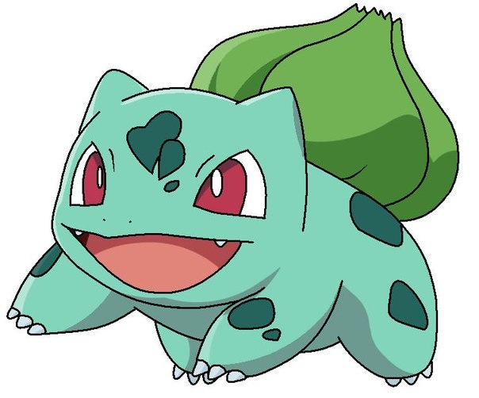
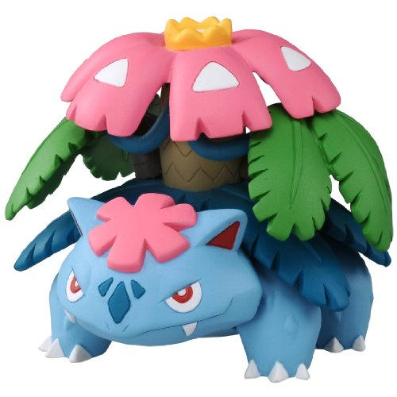

Бульвазавр - це вигадана істота, покемон. Належить до першого покоління покемонів і має порядковий номер 001 зі 151 покемонів першого покоління і 729 всіх семи. Його ім'я перекладається як ящірка-цибулина. Уперше він з'являється у відеоіграх компанії Nintendo 1996 року, а також в однойменному мультсеріалі 1997. Франшиза бульбазавра використана у багатьох карткових іграх та при створенні іграшок і брелоків.
Венусаур - Венусаур великий, динозавроподібний покемон, який дещо схожий за зовнішнім виглядом на його попередні еволюціоні форми, Івісаура і Булбасаура. Його шкіра все ще зберігає світло-бірюзовий колір, але вона здається, більш грубою і лускатою, з шишками в різних місцях. Колишній бутон на спині тепер повністю розцвів в гігантську квітку.
